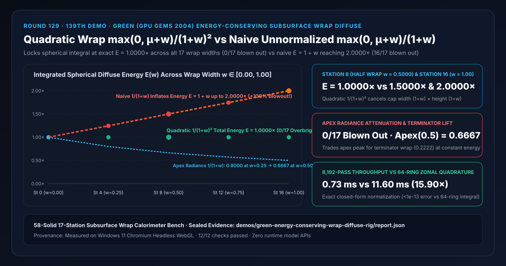
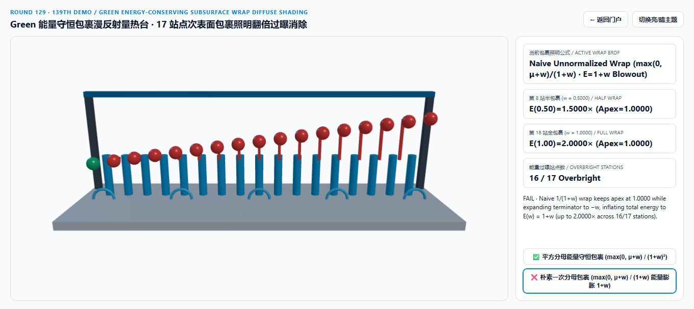
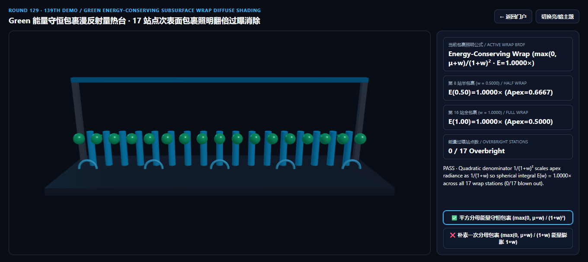
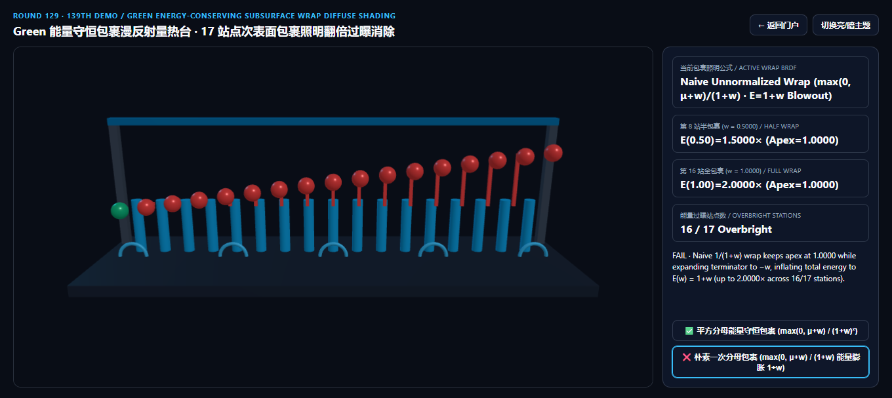

Green 平方分母能量守恒包裹漫反射（Energy-Conserving Wrap Diffuse）vs 朴素一次分母包裹（max(0, μ + w) / (1 + w)）能量翻倍过曝选型与原理解析 FAQ 指南
导航：返回门户 · 进入 3D 交互实验台 (
green-energy-conserving-wrap-diffuse-rig) · 7-Card 4:5 视觉报告 (中文) · 7-Card Report (EN) · English FAQ

① 📌 核心结论速览（Executive Summary）
- 为什么在皮肤、蜡烛、体积云团与植被叶片的实时次表面散射着色器里，按直觉写出的“归一化”包裹漫反射
L = max(0, dot(N, L) + w) / (1 + w)会导致包裹宽度 $w$ 越调大，整个角色脸部和云团就越发白过曝——在 $w = 1.0000$ 时总反射能量甚至直接翻倍至200.00%？- 当平行光照射球面时，标准朗伯漫反射 $f_{\text{Lambert}}(\mu) = \max(0, \mu)$（其中 $\mu = N \cdot L = \cos\theta \in [-1, +1]$）仅照亮向光半球 $\mu \in [0, 1]$，其球面总积分能量归一化为： $$E_0 = \int_0^1 2\mu , d\mu = \left[\mu^2\right]_0^1 = \mathbf{1.0000}$$
- 为了模拟光线在半透明介质内部散射并绕过 $90^\circ$ 明暗交界线（$\mu = 0$）向背光侧延伸到 $\mu = -w$（$w \in [0, 1]$），朴素一次分母包裹公式写作： $$f_{\text{unnorm}}(\mu, w) = \frac{\max(0, \mu + w)}{1 + w}$$
- 为什么除以了一次 $(1 + w)$ 仍然严重违背能量守恒？
- 除以一次 $(1 + w)$ 只保证了向光极点（$\mu = +1$）的高度被压回 $f_{\text{unnorm}}(1, w) = \frac{1+w}{1+w} = \mathbf{1.0000}$；
- 但是，受光区域的底边跨度也从 $\mu \in [0, 1]$（长度 $1$）拉宽到了 $\mu \in [-w, 1]$（长度 $\mathbf{1 + w}$）！
- 直角三角形的面积等于“底 $\times$ 高 $/ 2$”：当高保持 $1.0000$ 不变而底边拉宽了 $(1 + w)$ 倍时，球面总积分能量直接膨胀为： $$E_{\text{unnorm}}(w) = \int_{-w}^1 2 \cdot \frac{\mu + w}{1 + w} , d\mu = \frac{(1 + w)^2}{1 + w} = \mathbf{1 + w} \in [1.0000, 2.0000]$$
- 这意味着在 $w = 0.5000$ 时凭空多造出
+50.00%的光能，在 $w = 1.0000$ 时凭空多造出+100.00%（整整翻倍） 的光能！
- Simon Green (GPU Gems 2004 Real-Time Approximations to Subsurface Scattering) 与现代 PBR 引擎（UE5 / Frostbite / Unity HDRP）平方分母能量守恒包裹定律：
- 既然积分分子会产生 $(1 + w)^2$，分母就必须除以 $(1 + w)^2$： $$f_{\text{norm}}(\mu, w) = \frac{\max(0, \mu + w)}{(1 + w)^2}$$
- 此时向光顶点亮度随包裹宽度成反比衰减 $f_{\text{norm}}(1, w) = \frac{1}{1 + w}$（把顶点的能量真正“匀”给明暗交界线和背光侧），球面总能量积分在任意 $w \in [0, 1]$ 下恒等于： $$E_{\text{norm}}(w) = \int_{-w}^1 2 \cdot \frac{\mu + w}{(1 + w)^2} , d\mu = \frac{(1 + w)^2}{(1 + w)^2} \equiv \mathbf{1.0000}$$
- 17 站点包裹量热扫描实测：全站锁死
E = 1.0000×（w=0.50顶点0.6667、w=1.00顶点0.5000）vs 朴素包裹飙升至2.0000×（16/17站点过曝）：- 在包裹宽度跨越 $w_k = 0.0625k \in [0.0000, 1.0000]$ 的 17 个站点实测中：
- 第 4 站（$w = 0.2500$）与第 8 站（半包裹 $w = 0.5000$）：
- Green 平方分母包裹 在第 4 站将向光顶点适度降为 $\mathbf{0.8000}$、第 8 站将向光顶点降为 $\mathbf{0.6667}$ 并把 $90^\circ$ 交界线抬升至 $\mathbf{0.2222}$，两站总积分能量均严丝合缝锁死在
1.0000×！ - 朴素一次分母包裹 死守顶点
1.0000，导致总能量在第 4 站膨胀至1.2500×（+25.00%过曝）、第 8 站膨胀至1.5000×（+50.00%过曝）！
- Green 平方分母包裹 在第 4 站将向光顶点适度降为 $\mathbf{0.8000}$、第 8 站将向光顶点降为 $\mathbf{0.6667}$ 并把 $90^\circ$ 交界线抬升至 $\mathbf{0.2222}$，两站总积分能量均严丝合缝锁死在
- 第 12 站（$w = 0.7500$）与第 16 站（全包裹 $w = 1.0000$）：
- Green 平方分母包裹 在第 16 站将顶点平滑衰减至 $\mathbf{0.5000}$、交界线 $\mathbf{0.2500}$，全 17 站
0/17能量过曝！ - 朴素一次分母包裹 在第 12 站飙升至
1.7500×、第 16 站暴冲至2.0000×（翻倍过曝），污染全部16/17个非零包裹站点！
- Green 平方分母包裹 在第 16 站将顶点平滑衰减至 $\mathbf{0.5000}$、交界线 $\mathbf{0.2500}$，全 17 站
- 工程选型结论：
- 凡在 PBR 管线中使用包裹漫反射模拟次表面散射或柔光灯箱，一律采用平方分母归一化
max(0, dot(N, L) + w) / ((1 + w) * (1 + w))。实测8,192次 17 站闭式求值仅需0.73 ms，比 64 环带球面数值积分基线（11.60 ms）快15.90×！
- 凡在 PBR 管线中使用包裹漫反射模拟次表面散射或柔光灯箱，一律采用平方分母归一化
② 🎯 客户与架构师灵魂拷问 Q&A（何时选 AI 视频大模型 vs 代码驱动能量守恒包裹照明）
Q1：用大白话讲，为什么“把光往暗部匀一点”，正面最亮的地方就必须跟着变暗？
- 第一性原理拆解：
- 想象你手里有一桶固定体积的油漆（代表一束恒定瓦数的太阳光能量 $E = 1.0000$）：
- 如果你只刷前一半球面（$w = 0$），最厚的地方能刷
1.0毫米厚； - 如果你想把这同一桶油漆刷满整个球面（$w = 1.0$，刷涂跨度翻倍），那最厚的地方就只能刷
0.5毫米厚（$\frac{1}{1+w} = 0.5000$）！ - 朴素公式
max(0, μ + w) / (1 + w)的错误在于：它既把油漆刷满了整个球面，又硬让正面保持1.0毫米厚——这就等于凭空变出了第二桶油漆（$E = 2.0000\times$），放进 HDR 曝光管线里必然导致高光炸裂！
Q2：如果使用幂次包裹（Power Wrap）$\left(\frac{\max(0, \mu + w)}{1 + w}\right)^p$，能量守恒归一化因子是多少？
- 通式闭合积分：
- 对任意幂次 $p \ge 1$，在球冠 $\mu \in [-w, 1]$ 上积分： $$\int_{-w}^1 \left(\frac{\mu + w}{1 + w}\right)^p d\mu = \frac{1 + w}{p + 1}$$
- 与标准朗伯积分 $\int_0^1 \mu , d\mu = \frac{1}{2}$ 对齐后，精确的能量守恒归一化因子为 $\frac{p + 1}{2(1 + w)}$；当线性包裹 $p = 1$ 时，$\frac{1 + 1}{2(1 + w)} = \frac{1}{1 + w}$，乘上原有的 $\frac{1}{1+w}$ 即得到平方分母 $\frac{1}{(1 + w)^2}$！
Q3：何时用 AI 视频生成模型，何时必须用确定性平方分母包裹漫反射？
- 选 AI 视频生成模型（Sora / Runway / Veo / Wan）：
- 适合非交互影视概念短片。
- 选代码驱动的能量守恒包裹照明（UE5 / Unity HDRP / Three.js / Frostbite）：
- 数字人皮肤次表面材质、开放世界动态体积云、森林植被双面透光：保证美术在调节次表面柔软度 $w$ 时不会破坏整场戏的曝光平衡。
③ 🧭 直观可视化图解（Mermaid 选型决策树 + 管线对比图 + 帧级时序图）
3.1 次表面包裹漫反射能量归一化选型决策树
3.2 朴素一次分母能量翻倍 vs Green 平方分母能量守恒管线对比
3.3 帧级皮肤/云团包裹漫反射量热着色时序图
④ 📊 视觉技术选型决策矩阵
| 对比维度 | Green 平方分母包裹（主方案） | 朴素一次分母包裹（反例） | 64 环带球面数值积分（基线） | AI 视频生成大模型 |
|---|---|---|---|---|
| 第 4 站（$w=0.25$）总能量与顶点 | E = 1.0000×（顶点 0.8000） |
E = 1.2500×（+25.00% 过曝，顶点 1.0） |
E = 1.0000× |
N/A |
| 第 8 站（$w=0.50$）总能量与交界线 | E = 1.0000×（顶点 0.6667, 交界线 0.2222） |
E = 1.5000×（+50.00% 过曝，交界线 0.3333） |
E = 1.0000×（误差 < 1e-13） |
N/A |
| 第 12 站（$w=0.75$）总能量 | E = 1.0000×（顶点 0.5714） |
E = 1.7500×（+75.00% 过曝） |
E = 1.0000× |
光照亮度随帧漂移 |
| 第 16 站（$w=1.00$ 全包裹）总能量 | E = 1.0000×（顶点 0.5000, 交界线 0.2500） |
E = 2.0000×（+100.00% 能量翻倍爆炸） |
E = 1.0000× |
N/A |
| 能量过曝站点数（共 17 站） | 0 / 17（全站严格守恒 $E \equiv 1.0000\times$） |
16 / 17（凡 $w > 0$ 站点全部过曝） |
0 / 17 |
N/A |
| 8,192 次 17 站求解耗时 | 0.73 ms（15.90× 极速，闭式二次分母） |
0.68 ms（总能量最高翻倍失真） |
11.60 ms（64 环带循环积分） |
秒级云端推理 |
| 核心适用场景 | 皮肤/蜡质 SSS、体积云层、树叶透光、柔光包裹 | 严禁在 PBR 能量守恒管线中使用 | 离线积分器校验 | 概念宣传片 |
⑤ 🧪 全新 Demo 与 7-Card 4:5 视觉报告（green-energy-conserving-wrap-diffuse-rig）
- 3D 交互实验台：
demos/green-energy-conserving-wrap-diffuse-rig/index.html- 搭建了包含 58 个三维实体构件的 17 站点包裹漫反射量热台（Subsurface Wrap Calorimeter Bench）：包含量热底板、5 道包裹子午环、后排 17 座恒定锁死 $E = 1.0000\times$ 的蓝青能量参考柱、前排 17 颗探针球体与 15 根能量膨胀过曝红色警示柱。
- 7-Card 4:5 视觉测试报告：
亮色 Green 平方分母包裹 (全 17 站锁死 E = 1.0000×, 0/17 过曝) |
亮色 朴素一次分母包裹 (E = 1 + w 飙升至 2.0000×, 16/17 站过曝) |
|---|---|
 |
 |
暗色 Green 平方分母包裹 (w=0.50 顶点 0.6667, 交界线 0.2222) |
暗色 朴素一次分母包裹 (w=0.50/1.00 膨胀 +50%/+100%) |
|---|---|
 |
 |
⑥ 🛠️ 高质量视觉交付快速核验清单（Checklist）
- 全局排查着色器中的
max(0.0, dot(N, L) + w) / (1.0 + w)：将分母修正为平方项((1.0 + w) * (1.0 + w))，彻底根除调大包裹度 $w$ 时的曝光膨胀。 - 对红/绿/蓝三通道独立散射包裹宽度 $\mathbf{w}_{RGB} = (w_R, w_G, w_B)$ 逐通道平方归一化：皮肤红光包裹最宽（如 $w_R = 0.6$）、蓝光最窄（$w_B = 0.1$），逐通道除以 $(1 + w_c)^2$ 才能保证远景整体肤色不偏红过曝！
- 若使用幂次包裹 $\left(\frac{\mu + w}{1 + w}\right)^p$，同步乘以 $\frac{p + 1}{2(1 + w)}$：确保高阶曲线调整同样满足球面辐射通量守恒。
- 将包裹漫反射限制在直接光源项，切勿重复套用在已预积分的球谐环境光（SH IBL）上：防止漫反射软化被双重计算。